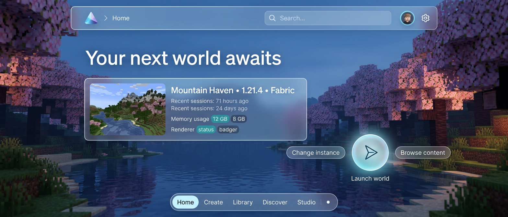
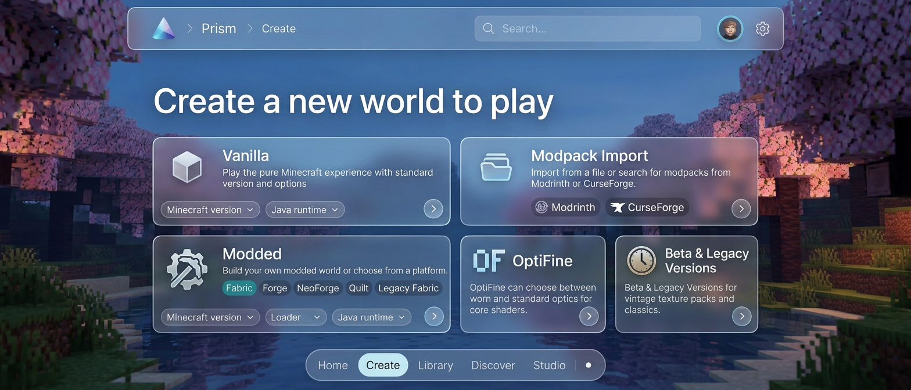
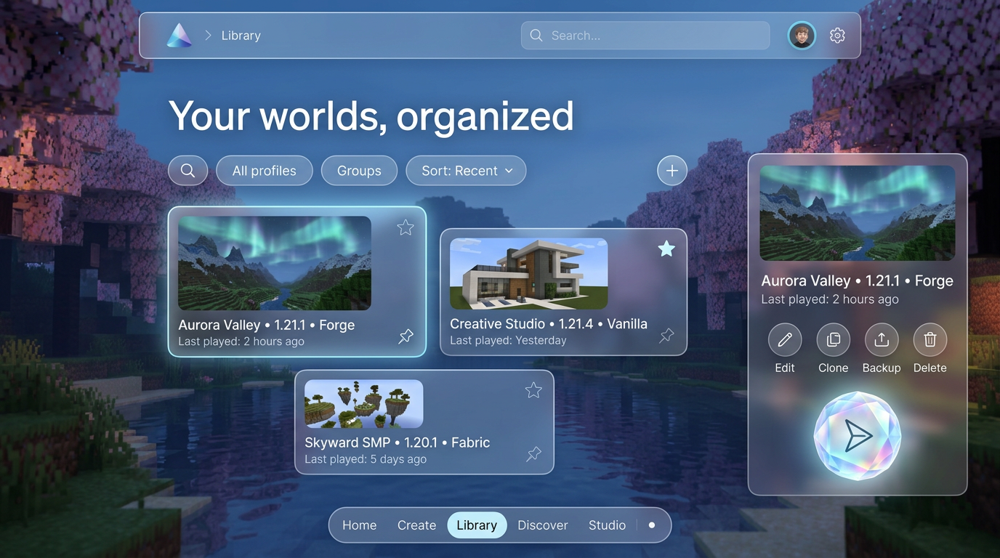
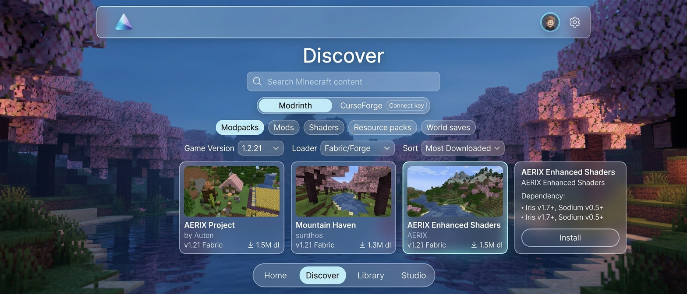
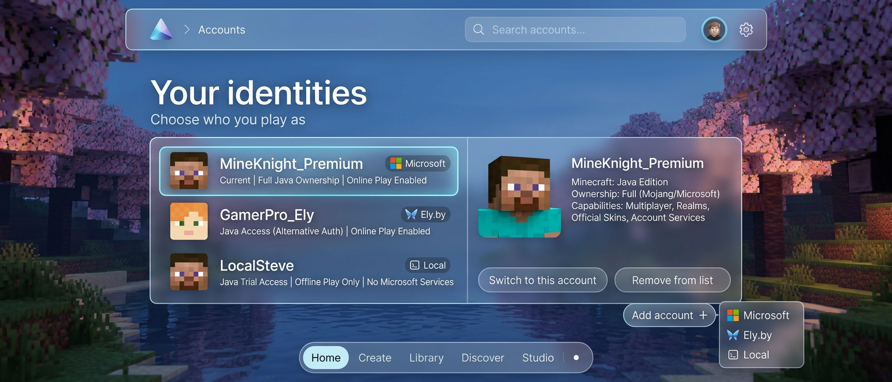
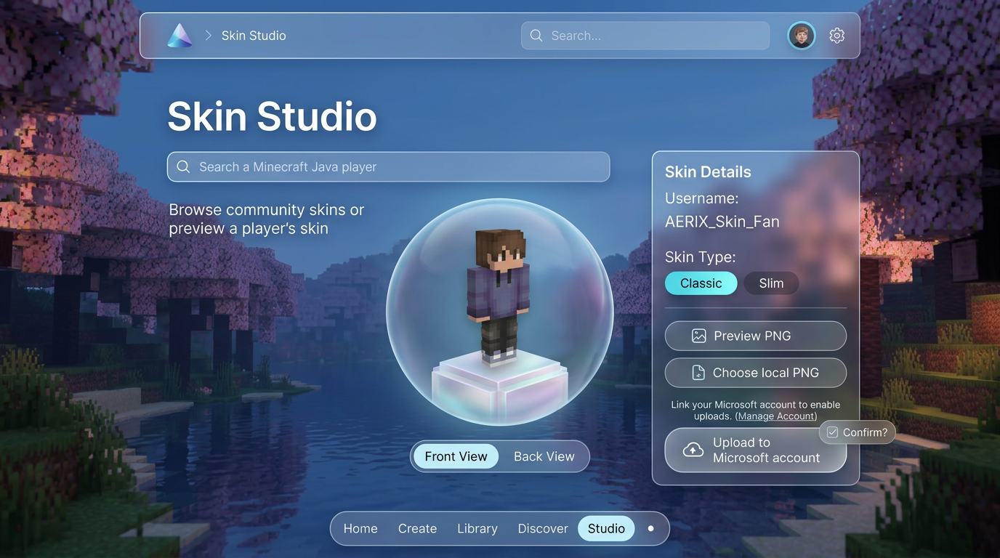
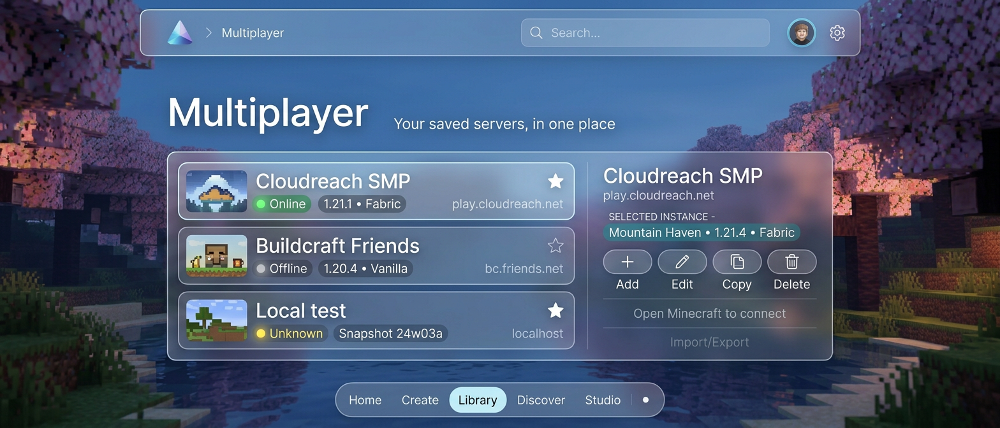
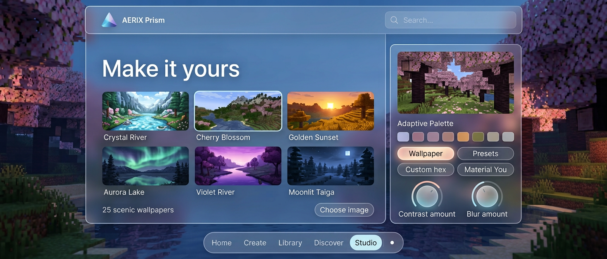
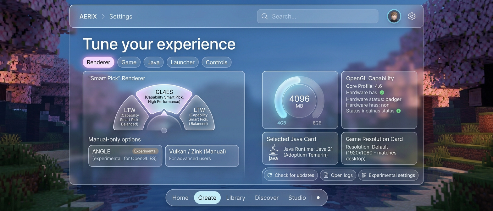
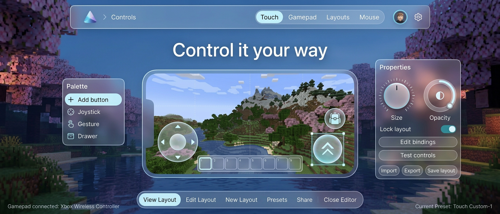

01 / START
Home
Selected instance, account and hardware context, recent play, content shortcut and a new glass launch orb.

Selected instance, account and hardware context, recent play, content shortcut and a new glass launch orb.

Vanilla, Fabric, Forge, NeoForge, Quilt, Legacy Fabric, OptiFine, older versions and modpack import. Version and runtime stay selectable.

Profile search, groups, favorites, pinning and sorting; select, edit, clone, back up, delete or launch an instance.

Modrinth and optional user-key CurseForge browsing. Modpacks, mods, shaders, resource packs and world saves with version/loader filters and install details.

Microsoft, Ely.by and local accounts, skin faces, current-account state, select/remove actions and clearly distinguished sign-in methods.

Public username search and skin preview; local PNG selection and confirmed upload only for an eligible Microsoft account.

Selected profile’s server list with add, edit, copy and delete controls. Joining still happens inside Minecraft, not from a fake launcher connect button.

25 bundled wallpapers and custom images, live preview, wallpaper-derived colors, presets, custom hex and Material You.

Renderer capability choices, GL4ES/LTW Smart Pick, manual ANGLE and Vulkan/Zink, memory, game resolution, Java runtime, launcher and update tools.

Touch, gamepad, mouse and layouts: draggable control overlays, bindings, size/opacity dials, presets and import/export.